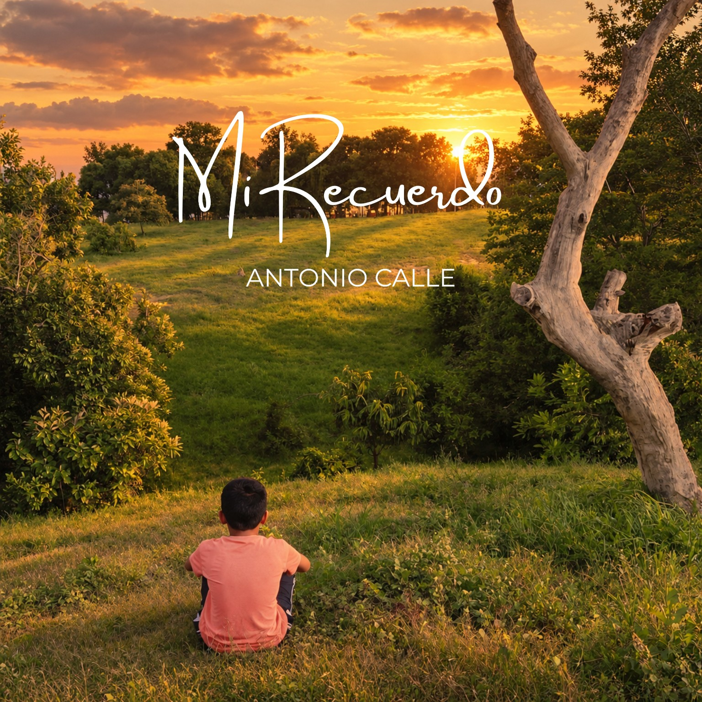

ARTISTA MUSICAL INDEPENDIENTE
Antonio Calle
Música que nace de las vivencias y busca conectar con tu historia.
Consulta los lanzamientos y encuentra los enlaces oficiales.
ANTONIO CALLE · MÚSICA
DISCOGRAFÍA
Lanzamientos musicales
Dos canciones, dos historias. Escúchalas desde sus enlaces oficiales.
26 OCTUBRE 2026
Cuando te veo reír
Escucha la canción desde su enlace inteligente oficial.
Escuchar canción ↗Cada canción tiene su propio enlace inteligente de Too Lost proporcionado por el artista.
01MI HISTORIA
SOBRE ANTONIO
Una historia que
se convierte en música.
Antonio Calle es un artista musical independiente que encontró en la música una forma de expresar sus vivencias, sus sentimientos y su relación con Dios.
Su propuesta musical abarca la música cristiana y los sonidos del R&B/Soul, con canciones que exploran el amor, la fe y los recuerdos.
A través de sus letras, busca compartir su historia y conectar con personas que encuentren en su música sentimientos y experiencias con las que puedan identificarse.
Escríbeme ↗ENCUENTRA MI MÚSICA
Escucha en tus plataformas
Accede al perfil de artista o elige la canción que quieres escuchar.
SpotifyPerfil de artista
↗
Too LostMi Recuerdo · Enlace inteligente
↗
Too LostCuando te veo reír · Enlace inteligente
↗
Los enlaces de cada canción llevan a su página inteligente de Too Lost.
CONTACTO
¿Quieres ponerte
en contacto?
Para consultas relacionadas con el proyecto musical, puedes escribirme por correo electrónico.
antoniocallemusic@gmail.com ↗